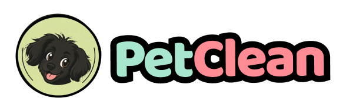

PROJETO INTERDISCIPLINAR · FATEC MAUÁ · 2026
gestão de pet shops, do banco ao endpoint
Como o back-end do PetClean foi construído: entidades JPA, banco H2, repositories, documentação Swagger/OpenAPI e endpoints com regras de negócio.

Resposta da API GET /api/pets?termo=thor
"raca": "Golden Retriever",
200 OK · application/json · 1 objeto
Swagger UI localhost:8080/swagger-ui.html
Fala de Helen Aclina
Boa noite! Somos o grupo do PetClean — eu sou a Helen, e junto comigo estão o Gabriel e o João Vitor. Vamos apresentar a API do PetClean, o back-end Java do nosso Projeto Interdisciplinar.
A ideia é simples: o painel que vocês já conhecem só funciona porque existe uma API por trás. É ela que guarda os clientes, os pets, os agendamentos e o estoque. Hoje mostramos como essa API foi construída — os modelos, o banco H2, os repositories, a documentação no Swagger e os endpoints com as regras de negócio.
Dividimos a apresentação em três blocos: eu começo pelos modelos e entidades, o Gabriel segue com banco de dados e repositories e o João Vitor fecha com Swagger, CRUD e endpoints especializados.
PetClean · API REST de gestão para pet shops · Projeto Interdisciplinar — Fatec Mauá
Helen · Gabriel · João Vitor
Três blocos, cada um com um responsável
A ordem acompanha o caminho de uma requisição: do modelo de dados até o endpoint documentado.
Arquitetura em camadas do projeto
As 6 entidades JPA e os 7 enums
Relacionamentos e integridade referencial
Anotações JPA e @Schema no código
Banco de Dados e Repositories
H2 em memória, console e ddl-auto
data.sql: 71 registros de demonstração
Spring Data JPA: o CRUD vem pronto
HQL, SQL nativo e projections
springdoc: Swagger UI e OpenAPI JSON
CRUD completo com status HTTP corretos
Filtros e buscas parametrizadas
Conflito de horário e estoque crítico
Fala de Helen Aclina
Antes de começar, só para vocês saberem onde estamos indo.
A apresentação tem três blocos, um para cada integrante. Eu começo pelo modelo de dados: como o PetClean representa clientes, pets, agendamentos e estoque no código Java. O Gabriel continua com a camada de persistência — o banco H2 e os repositories. E o João Vitor fecha com a parte que todo mundo vê: a documentação no Swagger, o CRUD e os endpoints que carregam as regras de negócio.
A ordem não é por acaso: ela é exatamente o caminho que uma requisição faz dentro do projeto.
PetClean · API REST de gestão para pet shops · Projeto Interdisciplinar — Fatec Mauá
Helen · Gabriel · João Vitor
Cada classe tem um papel: do HTTP ao banco
Organização em camadas no pacote br.com.fatecmaua.petclean, o mesmo padrão do projeto de referência da disciplina.
Java 17 · Spring Boot 3.5.16 · Maven
web · data-jpa · validation · thymeleaf · springdoc
O controller recebe um DTO com @Valid. Campos obrigatórios, CPF com dígito verificador e idade entre 0 e 40 são barrados antes de chegar ao service.
GlobalExceptionHandler transforma exceções em JSON: 400 para dados inválidos, 409 para conflito de negócio e 422 para regra não atendida.
Projections trazem só as colunas usadas nas listagens — sem carregar a entidade inteira quando a tela precisa de três campos.
UMA REQUISIÇÃO NA PRÁTICA
POST /api/agendamentos → AgendamentoController → AgendamentoService (checa conflito) → AgendamentoRepository → H2
Fala de Helen Aclina
Antes de entrar nas entidades, vale entender onde elas vivem.
O projeto está dividido em camadas, igual ao padrão que a gente viu na disciplina. A requisição entra pelo control, que só cuida de HTTP: recebe o JSON, valida com Bean Validation e devolve o status certo. Ele chama o service, que é onde ficam as regras de negócio — por exemplo, checar conflito de horário. O service fala com o repository, e o repository com o banco H2.
Essa separação é o que permite testar as regras sem subir servidor: a maioria dos nossos testes ataca o service direto. E o GlobalExceptionHandler garante que qualquer erro saia no mesmo formato JSON, o que o painel consegue mostrar em qualquer tela.
PetClean · API REST de gestão para pet shops · Projeto Interdisciplinar — Fatec Mauá
Helen · Gabriel · João Vitor
Seis entidades, um domínio só
Pacote model/ — cada classe é uma tabela (@Entity + @Table) e cada campo é uma coluna documentada com @Schema.
telefone · email · endereco
@OneToMany pets, agendamentos
cliente : Cliente @ManyToOne
cliente · pet : @ManyToOne
status : StatusAgendamentoEnum
atualizadoEm · motivoCancelamento
quantidade · estoqueMinimo
@Table movimentacao_estoque
produto : Produto @ManyToOne
tipo : TipoMovimentacaoEnum
observacao · registradoEm
senhaHash : String bcrypt
nomePetshop · telefone · endereco
foto : byte[] · dataAlteracaoSenha
7 enums do domínio EspecieEnum · PorteEnum · ServicoEnum · StatusAgendamentoEnum · CategoriaProdutoEnum · TipoMovimentacaoEnum · PerfilEnum
Fala de Helen Aclina
Este é o coração do projeto: seis entidades que cobrem todo o domínio de um pet shop.
Cliente é o tutor. Pet está sempre vinculado a um cliente — a chave estrangeira é obrigatória. Agendamento amarra cliente, pet, serviço, data e hora, e guarda o valor e a duração calculados a partir do serviço, não digitados pelo usuário.
Produto controla o estoque com quantidade e estoque mínimo, e MovimentacaoEstoque guarda o histórico de cada entrada e saída. Por último, Usuario, que cuida do acesso ao painel com senha em bcrypt.
Repare que os campos que só podem ter alguns valores viraram enums — espécie, porte, serviço, status, categoria, tipo de movimentação e perfil. Isso evita status escrito errado no banco e faz o Swagger listar as opções automaticamente.
PetClean · API REST de gestão para pet shops · Projeto Interdisciplinar — Fatec Mauá
Helen · Gabriel · João Vitor
As ligações e as regras que elas protegem
Um relacionamento bem mapeado é o que permite bloquear exclusões indevidas e impedir dois banhos no mesmo horário.
Todo pet pertence a um tutor. Excluir cliente com pet vinculado devolve 409.
O agendamento guarda tutor e pet; o serviço define valor e duração.
Cada entrada ou saída gera um registro histórico com data e observação.
ENUMS: TEXTO LEGÍVEL NO BANCO
CACHORRO · GATO · AVE · ROEDOR
AGENDADO · CONFIRMADO · REALIZADO
categoria · perfil · tipo mov.
@Enumerated(EnumType.STRING) grava o nome
Integridade referencial (RNF-09)
ClienteService bloqueia exclusão com pets
PetService bloqueia com agendamento futuro
Produto com histórico sugere inativar
Status novo? vira valor de enum, não texto solto.
Fala de Helen Aclina
Aqui estão as três ligações principais. Cliente para pet é um para muitos: um tutor pode ter vários pets, mas cada pet tem um tutor. Agendamento aponta para o cliente e para o pet ao mesmo tempo, porque na tela a gente precisa mostrar os dois.
Esses vínculos não são só desenho: eles viraram regra. O ClienteService consulta se o cliente tem pets antes de excluir; o PetService checa se existe agendamento futuro. Se existir, a API devolve 409 com uma mensagem explicando o motivo, em vez de quebrar o banco.
E os enums são gravados como texto — @Enumerated STRING. Isso deixa o banco legível quando abrimos o console do H2, e qualquer valor inválido nem compila.
PetClean · API REST de gestão para pet shops · Projeto Interdisciplinar — Fatec Mauá
Helen · Gabriel · João Vitor
A entidade Pet, linha por linha
Uma entidade, três decisões: tabela, chave estrangeira e enum como texto.
@Schema(description = "Pet vinculado a um cliente")
@GeneratedValue(strategy = IDENTITY)
@ManyToOne(optional = false)
@JoinColumn(name = "fk_cliente")
private Cliente cliente; // tutor obrigatório
@Enumerated(EnumType.STRING)
@Column(nullable = false, length = 20)
private EspecieEnum especie;
@Column(nullable = false)
private Integer idade; // 0 a 40 no DTO
A classe vira tabela e o nome é fixado — o console do H2 mostra exatamente `pet`.
optional = false cria a FK `fk_cliente` NOT NULL: pet sem tutor não é salvo.
@Enumerated(EnumType.STRING)
Grava o nome do enum, não o número. Banco legível e seguro contra reordenação.
Descrição e exemplo de cada campo aparecem na documentação do Swagger.
Fala de Helen Aclina
Para fechar meu bloco, um pedaço real do código, sem simplificação.
Em quatro linhas a gente tem o essencial: a classe vira tabela, o cliente vira chave estrangeira obrigatória, a espécie é um enum gravado como texto e cada campo tem uma descrição que aparece no Swagger.
Uma decisão importante: a validação de faixa, tipo idade entre 0 e 40, fica no DTO, não na entidade. A entidade representa o dado; o DTO representa o que o usuário pode enviar. Com isso eu passo a palavra para o Gabriel falar do banco.
Banco de dados e Repositories
Por que H2 em memória — e o que ele resolve
Console do banco e carga inicial com data.sql
Repositories: o CRUD pronto do Spring Data
HQL, SQL nativo e projections
Em seguida: Banco de Dados → Repositories → Consultas
Fala de Gabriel Wagner
Obrigado, Helen. Meu bloco é o que fica embaixo da API: onde os dados realmente moram. Vou mostrar o banco H2, como ele é configurado, a carga inicial de dados e depois os repositories — incluindo as consultas que escrevemos na mão.
PetClean · API REST de gestão para pet shops · Projeto Interdisciplinar — Fatec Mauá
Helen · Gabriel · João Vitor
H2 em memória: leve, rápido e descartável
Tudo em um arquivo: URL, console, schema e carga inicial.
# H2 em memoria — sobe junto com a aplicacao
spring.datasource.url=jdbc:h2:mem:petcleandb
spring.datasource.username=sa
spring.datasource.password=
# Console web: localhost:8080/h2-console
spring.h2.console.enabled=true
# Hibernate cria as tabelas a cada subida
spring.jpa.hibernate.ddl-auto=create
spring.jpa.defer-datasource-initialization=true
spring.sql.init.mode=always
spring.sql.init.encoding=UTF-8
Registros da carga inicial, por tabela
Fala de Gabriel Wagner
O enunciado permitia usar o H2, e a gente escolheu justamente por ser em memória: o projeto sobe, cria as tabelas e carrega os dados de demonstração sozinho. Ninguém precisa instalar MySQL para rodar na sua máquina.
São quatro linhas de configuração que importam: a URL jdbc:h2:mem:petcleandb, o console habilitado em /h2-console, o ddl-auto create — que recria o schema a cada subida — e o defer-datasource-initialization com sql.init.mode always, que garante que o data.sql rode depois do Hibernate criar as tabelas.
O data.sql tem 71 inserts: 8 clientes, 10 pets, 24 agendamentos, 10 produtos, 15 movimentações e 4 usuários. As datas dos agendamentos são relativas, com DATEADD, para o dashboard nunca aparecer vazio, independentemente do dia da apresentação.
E como é em memória, ao parar a aplicação tudo é descartado — o que é ótimo para demonstração: cada ./mvnw spring-boot:run começa de um estado conhecido.
PetClean · API REST de gestão para pet shops · Projeto Interdisciplinar — Fatec Mauá
Helen · Gabriel · João Vitor
Spring Data JPA: o CRUD vem de graça
Basta estender JpaRepository<Entidade, Long> — findAll, findById, save e deleteById já existem, sem uma linha de implementação.
Nome do método = consulta. E quando não basta, @Query.
repository/PetRepository.java
public interface PetRepository extends JpaRepository<Pet, Long> {
// consulted by name: o Spring monta o SQL
List<Pet> findByClienteIdOrderByNome(Long idCliente);
long countByClienteId(Long idCliente);
// HQL: filtro por nome do pet ou do tutor
@Query("from Pet p where lower(p.nome) like ...")
List<Pet> filtrarPorNomePetOuTutor(@Param("termo") String termo);
// SQL nativo + projection (US-08)
@Query(nativeQuery = true, value = "select ...")
List<PetResumoProjection> filtrarResumo(@Param("termo") String termo);
6 INTERFACES, ZERO IMPLEMENTAÇÃO
MovimentacaoEstoqueRepository
Query methods: o nome é a consulta
existsByCpf → gera o SELECT de duplicidade
contarPendentesDoDia → agendamentos do dia
Quando o nome não basta: @Query
Filtros com like, conflito de horário e agregações do dashboard são escritos em HQL ou SQL nativo dentro do repository.
Fala de Gabriel Wagner
O Spring Data JPA resolve a maior parte do trabalho pesado. As seis interfaces estendem JpaRepository e, só com isso, cada entidade já tem findAll, findById, save, deleteById e paginação. Não existe classe de implementação no projeto — o Spring gera o proxy em tempo de execução.
Quando o método padrão não serve, a gente desce um nível. Primeiro os query methods: o nome do método é a consulta. findByClienteIdOrderByNome quer dizer 'busque por id do cliente, ordenado por nome'. existsByCpf resolve a duplicidade de CPF, countByClienteId conta os pets do tutor.
E quando a consulta é mais complexa — filtro com like, contagem de conflito de horário, agregação por mês — a gente escreve com @Query, em HQL ou SQL nativo. Isso me leva ao próximo slide.
PetClean · API REST de gestão para pet shops · Projeto Interdisciplinar — Fatec Mauá
Helen · Gabriel · João Vitor
HQL, SQL nativo e projections
A mesma busca tem duas versões: a que devolve a entidade completa e a que devolve apenas três colunas.
// HQL: filtra por nome do pet ou do tutor (US-08)
@Query("from Pet p where "
+ "lower(p.nome) like lower(concat('%', :termo, '%')) "
+ "or lower(p.cliente.nome) like lower(concat('%', :termo, '%')) "
List<Pet> filtrarPorNomePetOuTutor(@Param("termo") String termo);
// SQL nativo + projection = 3 colunas (US-08)
@Query(nativeQuery = true, value =
"select p.nome pet, cast(p.especie as varchar) especie, "
+ "c.nome tutor from pet p inner join cliente c "
+ "on (p.fk_cliente = c.id) where lower(p.nome) like ...")
List<PetResumoProjection> filtrarResumo(@Param("termo") String termo);
Resposta de GET /api/pets/resumo?termo=thor
Por que projection vale a pena
Traz 3 colunas em vez de ~20
Não hidrata entidade nem abre transação
A listagem do painel fica mais leve
5 projections · Cliente, Pet, Agendamento, Dia, Produto
ORDER BY na consulta — o estoque já vem ordenado pelo banco
Fala de Gabriel Wagner
Essa dupla de métodos mostra bem a evolução. A primeira consulta é HQL e devolve a entidade Pet inteira, com todos os relacionamentos. É o que a tela de edição precisa.
A segunda é SQL nativo com projection: um select que traz só nome, espécie e nome do tutor. A interface PetResumoProjection é uma interface com três getters, e o Spring preenche direto — não existe classe, não existe mapeamento manual.
Isso importa porque a listagem de pets aparece no dashboard e precisa ser leve. Volume de dados baixo aqui, mas o hábito é o que vale: busque só o que a tela mostra.
Tem ainda um detalhe de regra: o estoque crítico já vem ordenado pelo banco, do maior déficit para o menor. A ordenação é decisão de negócio, então mora na consulta, não no JavaScript.
Swagger, CRUD e endpoints especializados
Documentação gerada a partir do código
Testar a API pelo navegador, com sessão
As quatro operações CRUD e seus status
Filtros, conflitos e consultas de negócio
Em seguida: Swagger/OpenAPI → CRUD → Endpoints especializados
Fala de Joao Vitor Silva
Boa, Gabriel. Eu fecho mostrando a parte que dá para ver funcionando: a documentação no Swagger, o CRUD completo e os endpoints que carregam as regras de negócio do PetClean.
PetClean · API REST de gestão para pet shops · Projeto Interdisciplinar — Fatec Mauá
Helen · Gabriel · João Vitor
Documentação que também é ferramenta de teste
O springdoc lê os controllers e gera a especificação OpenAPI em /api-docs.
Uma classe só: título, versão e o cookie de sessão.
swagger/SwaggerConfig.java
public class SwaggerConfig {
@Bean OpenAPI configurarSwagger() {
final String esquema = "sessaoPetClean";
.title("PetClean — API de Gestao para Pet Shops")
.addSecurityItem(new SecurityRequirement
.components(new Components
.addSecuritySchemes(esquema,
.type(APIKEY).in(COOKIE))));
localhost:8080/swagger-ui.html
Testar rota protegida no próprio Swagger
POST /login com e-mail e senha
O cookie PETCLEANSESSION fica no navegador
Authorize e as rotas protegidas respondem
Fala de Joao Vitor Silva
Boa noite. Fecho o grupo mostrando o que o Swagger faz por nós.
A configuração é uma classe só. O springdoc lê os controllers e gera a especificação OpenAPI automaticamente — quem escreve a documentação é o próprio código. É por isso que os @Operation e @Schema que a Helen mostrou fazem diferença: eles viram o texto que aparece aqui.
A parte que a gente adicionou de propósito foi o esquema de segurança: a nossa autenticação é sessão por cookie, então o Swagger precisa saber que existe um cookie chamado PETCLEANSESSION. Sem isso, toda rota protegida responde 401 e não dá para testar nada.
Na prática: abre /swagger-ui.html, executa o POST /login, o navegador guarda o cookie e a partir daí os endpoints de clientes, pets, agendamentos e estoque funcionam direto na tela, sem Postman. As tags numeradas organizam os endpoints por épico do projeto.
PetClean · API REST de gestão para pet shops · Projeto Interdisciplinar — Fatec Mauá
Helen · Gabriel · João Vitor
As quatro operações, com os status certos
Cada verbo HTTP devolve o código que o painel espera — e cada falha tem um código próprio.
Cria o cliente e devolve o Location do recurso.
/api/clientes?termo=maria
Lista, busca por id ou filtra por nome/CPF.
Atualiza o registro inteiro; CPF continua único.
Exclui sem corpo; com vínculo devolve 409.
Testando por linha de comando
curl -X POST localhost:8080/api/clientes \
-H "Content-Type: application/json" \
-d '{"nome":"Maria da Silva",
# movimentar estoque (PATCH especializado)
curl -X PATCH localhost:8080/api/produtos/1/movimentar \
-d '{"tipo":"SAIDA","quantidade":2}'
CÓDIGOS DE ERRO PADRONIZADOS
Fala de Joao Vitor Silva
Sobre o CRUD: as quatro operações existem para todas as entidades principais, então são 48 endpoints no total. O que importa aqui é que cada uma devolve o status correto.
POST devolve 201 com o Location do recurso criado — não 200. DELETE devolve 204, sem corpo. E o DELETE do cliente é o exemplo perfeito de regra de negócio no CRUD: se o cliente tem pet ou agendamento, ele não apaga, devolve 409 e explica o motivo. Produto é parecido: com histórico de movimentação, o certo é inativar em vez de excluir, e existe um PATCH específico para isso.
Os erros também são padronizados pelo GlobalExceptionHandler: 400 para corpo inválido, 401 quando não tem sessão, 404 quando o id não existe, 409 para conflito e 422 para regra não atendida, como a foto acima de 2 MB.
PetClean · API REST de gestão para pet shops · Projeto Interdisciplinar — Fatec Mauá
Helen · Gabriel · João Vitor
Onde a regra de negócio aparece na URL
Filtra por nome ou CPF sem diferenciar maiúsculas. A tela de clientes usa em tempo real.
/api/produtos?termo=&categoria=
Nome e categoria na mesma consulta — é a busca do estoque.
/api/agendamentos/agenda?data=
Volta em projection com tutor, pet, serviço e horário, já ordenado.
Mesmo dia e horário ativos → 409 e nada é gravado. É a regra mais testada.
/api/produtos/estoque-critico
quantidade ≤ mínimo, do maior déficit para o menor.
/api/dashboard?periodo=semanal
KPIs + gráfico de 8 semanas ou 6 meses, com períodos vazios zerados.
48 endpoints 43 nas 7 tags de domínio + 5 do perfil · US-04, US-08, US-12, US-17, US-20, US-23, US-24, US-25
Fala de Joao Vitor Silva
O último requisito era o que mais gostei de fazer: endpoints que não são CRUD, que existem por causa de uma regra do PetClean.
Alguns são consultas: busca por termo em clientes, filtro combinado de nome e categoria no estoque, agenda do dia. Outros são operações que só fazem sentido no nosso domínio: o conflito de horário, que impede dois banhos no mesmo horário e devolve 409 sem gravar nada; o estoque crítico já ordenado pelo déficit; e o dashboard, que devolve os KPIs e o gráfico de oito semanas ou seis meses.
Cada um desses endpoints corresponde a uma história de usuário do relatório. Dá para rastrear: a US-17 é o conflito, a US-20 é o alerta de estoque crítico, a US-23 é o gráfico por período.
Os seis requisitos, entregues
E tudo isso rodando em uma aplicação só: ./mvnw spring-boot:run e a API sobe com banco, dados e documentação.
6 entidades JPA + 7 enums
6 interfaces Spring Data JPA
POST · GET · PUT · DELETE
filtros, conflitos, dashboard
localhost:8080/swagger-ui.html
localhost:8080/h2-console
Obrigado! O projeto completo está no repositório, com README, testes e o roteiro de validação.
Helen Aclina · Gabriel Wagner · João Vitor Silva — Projeto Interdisciplinar · Fatec Mauá · 2026
Fala de Joao Vitor Silva
Fechando: os seis requisitos do trabalho estão entregues. Modelos e entidades com as seis classes JPA, banco H2 em memória com carga inicial, repositories com Spring Data, Swagger configurado e documentado, CRUD completo e os endpoints especializados com as regras do PetClean.
Tudo isso roda com um comando, e os links para testar estão aqui. Obrigado — ficamos à disposição para perguntas.